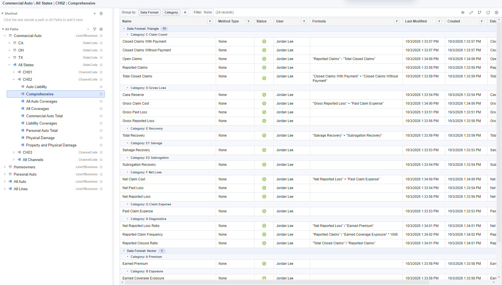

Start Working
Find your workspace and check access.
Arco User Guide
Follow the app screens to find data, review methods, organize your work, and use Arco's scripting and integration tools.
Find your workspace and check access.
Inspect project definitions and find a segment's data.
Inspect a triangle, select factors, and compare ultimates.
Dataset Viewer · Development Factor Method · Result Selection
Group related steps and run focused actions.
Write a script or ask about the work you have open.
Arcode · Python API · ArcBot
Read values in a workbook or review a data transfer.
In Arco's Project Explorer, expand Test/Demos and double-click Monthly_Insurance_Dataset. On the Project Page, select Commercial Auto → All States → CH02 → Comprehensive.

For a first review, follow Project Page → Development Factor Method → Result Selection.